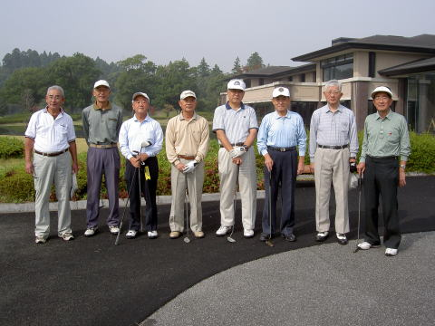
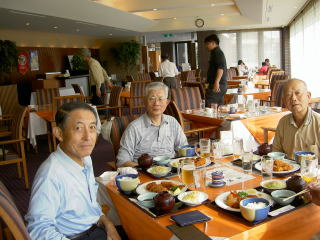
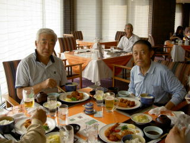
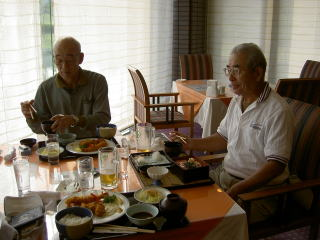
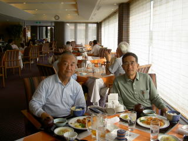
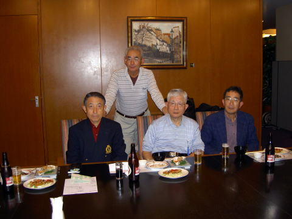
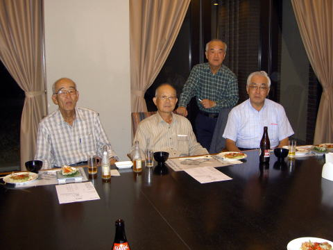

横浜国立大学工学部第四寮
第２回弘南寮ゴルフ大会
| どういうめぐり合わせか、この大会の日には奇妙に天気が回復する。 当日は快晴無風、暑くなく寒くなく絶好のゴルフ日和に恵まれ、久しぶりの懐かしい仲間が揃い、２名の新規参加者を迎え存分にゴルフを堪能することができた。 ゴルフ場の予約やパーティの設定など、前回と同じく竹内さんのお世話になった。 時 ： 平成１８年１０月２０日（金） 所 ： 季美の森 ゴルフ倶楽部 千葉県山武郡大網白里町季美の森 |
|  | 参加者 ： 左から 中野宏 ３８年 機械 久米範佳 ３８年 造船 猪原暉雄 ３７年 造船 高石周志 ３６年 電工 嵐雅彦 ３４年 電化 竹内哲夫 ３１年 造船 山之内克彦 ３４年 機械 高橋千穐 ３７年 応化 |
昼食風景
|  |  |  |
|  |
戦い済んで、厳しい反省会
当日の成績 ：
ベストグロス 久米さん ４５−４１
ペリア方式 １位 嵐さん ネット ７０．６
次回は本日のベストグロスに耀いた 久米さんが幹事となり、千葉県の 本千葉カントリー で来年５月の
連休明け 第１週に行う事を決め、散会した。
 